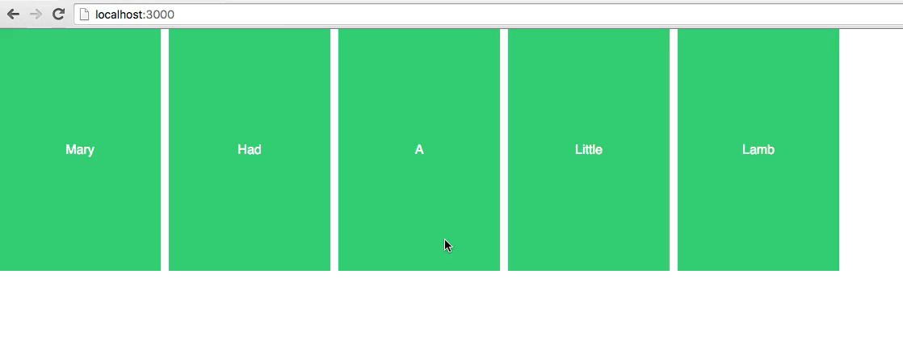
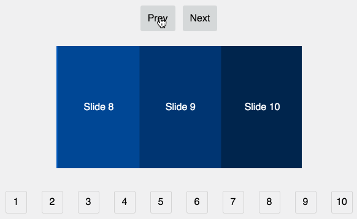
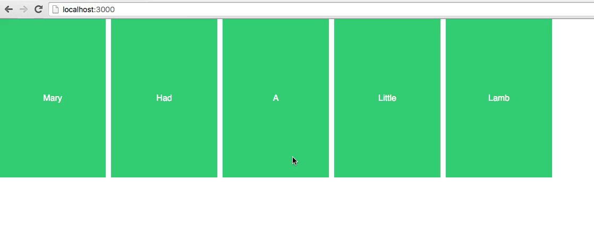
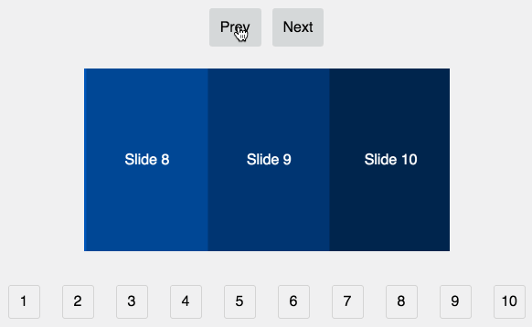
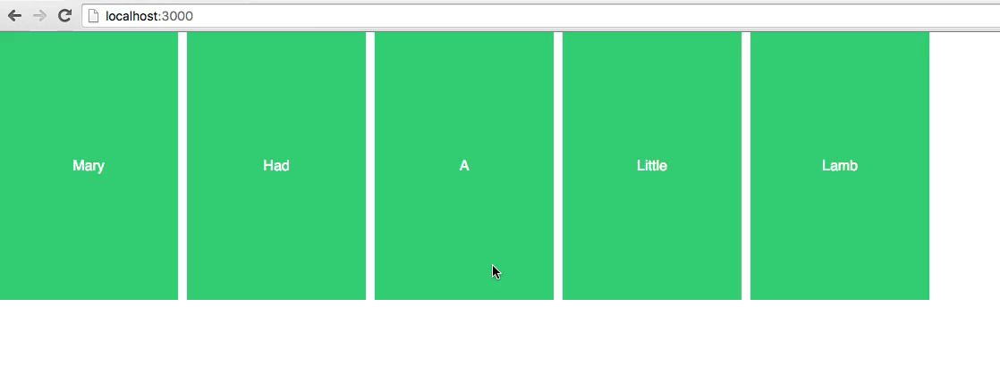
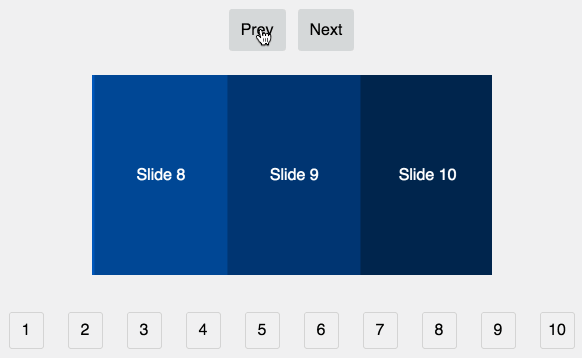
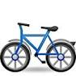
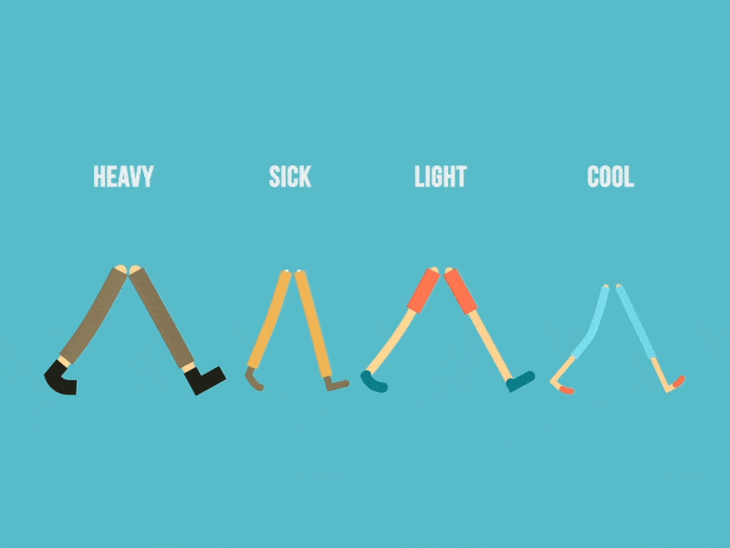
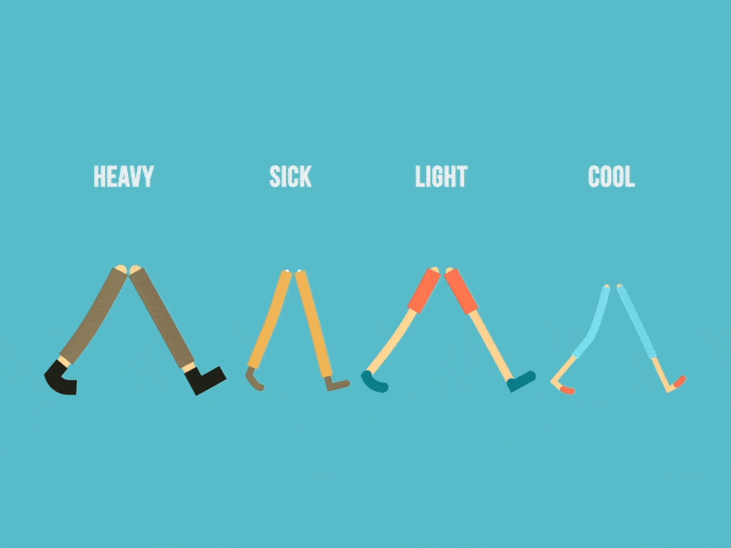

react-motion
 



const arrCards = [{key: 1,}, {key: 2,}, {...}]
<div class="card-wrap"><div class="card">1</div><div class="card">2</div><div class="card">...</div></div>


getDefaultStyles() { // нужно создать метод, который будет определятьисходное состояние для каждого элемента (массив объектов)return this.state.arrCards.map(()=> {return {opacity: 0,translateY: 50,};});}getStyles(prevInterpolatedStyles) { // также метод, который будет описывать саму анимацию, используюпредыдущие состояния (они передаются аргументом)return prevInterpolatedStyles.map((_, i) => {if (i === 0) {return {opacity: spring(1, [30, 11]), // функция spring, грубо говоря, задает тип анимации, наподобии ease, ease-in-out и т.д.translateY: spring(0, [30, 11]),};} else {return {opacity: spring(prevInterpolatedStyles[i - 1].opacity),translateY: spring(prevInterpolatedStyles[i - 1].translateY),};}});}
render() {return (// Компонент <StaggeredMotion> как раз рассчитан на анимирование коллекции элементов// В children'ы передается функция, которая будет вызваться всю анимацию<StaggeredMotion defaultStyles={this.getDefaultStyles()} styles={this.getStyles}>{(interpolatingStyles) =><div className="card-wrap">{interpolatingStyles.map((item, i) => {return (<divkey={item.key}className="card"style={{// собственно значения, которое высчитываются в getStyles(изначально состояние выставляется из getDefaultStyles)opacity: `${item.opacity}`,transform: `translateY(${item.translateY}px)`}}datatype={item.type}>{item.key}</div>);})}</div>}</StaggeredMotion>);}
Тоже самое, что и react-motion, но своими руками и оперируя классами
(setState + setTimeout + Recursion =   )
)
.card-appear,.card-enter {opacity: 0;transform: translateY(50px);}.card-appear-active,.card-enter-active {opacity: 1;transform: translateY(0);transition: opacity 0.4s ease,transform 0.4s ease;}.card-leave {opacity: 1;}.card-leave-active {opacity: 0;transition: opacity 0.5s ease;}
render() {const arrCards = this.props.children;return (<div className="card-wrap">{arrCards.map((item) => {return (<divkey={item.key}className="card"ref={(elem) => this.arrCards.push(elem)}>{item.key}</div>);})}</div>);}
fadeIn() {let index = 0;let nextElementDelaylet animeJS = anime.timeline();animeJS.add({targets: this.arrCards,duration: 1,opacity: 0,translateY: 50,});arrCards.forEach((elem) => {let delay = index++ * nextElementDelay * 1000;animeJS.add({targets: elem,duration: 400,opacity: 1,translateY: 0,easing: 'linear',offset: delay,});});}
 

fadeIn() {let nextElementDelay = 0.2;let appearTime = 0.4;let tl = new TimelineLite();tl.set(this.arrCards, {display: 'none',opacity: 0,y: 50,}).staggerTo(this.arrCards, appearTime, {display: 'block',opacity: 1,y: 0,}, nextElementDelay);}
// Web Animationsvar animation = new Animation(element, {"transform": "translate(100px, 200px)"}, 1500);// GSAPvar animation = TweenMax(element, 1.5, { x: 100, y: 200 });
.set.to.fromTo.delay.call.addLabel.eventCallbackПлашка должна появляться сверху вниз и исчезнуть после 3 секунд в обратном порядке.